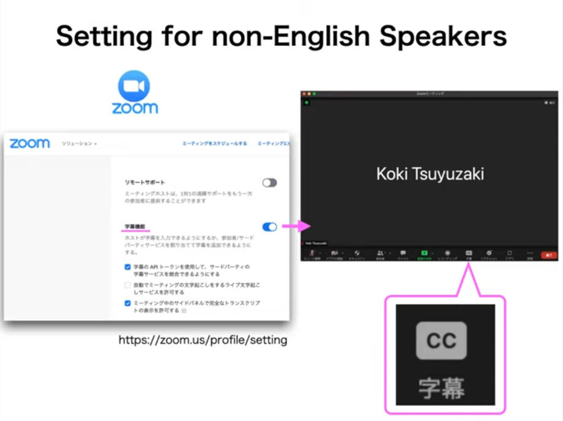
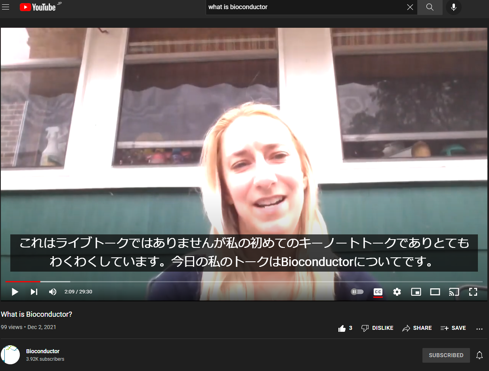
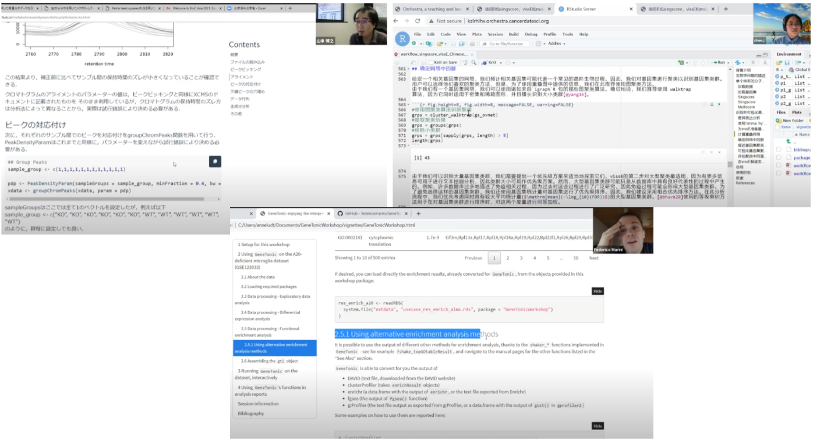

私達 BioC Asia 2021 運営委員会 は 2021 年 11 月 1 日から 4 日まで Bioconductor のアジア地域のカンファレンス BioC Asia 2021 を 2020年と同様に バーチャル開催しました。 この投稿では私達が BioC Asia 2021 で多様性の実現のために挑戦した言語障壁の克服の試みを紹介します。
私達は下記の3つを用いて言語障壁の緩和を試みました。
- Zoom の live transcription
- YouTube を用いた英語スピーチの日本語翻訳の字幕 (ただしライブ翻訳ではなく事前の人力での翻訳)
- 複数の Zoom Meeting を用いた 3 言語のパラレルワークショップ (日本語、英語、Mandarin)
Zoom の live transcription
Zoom には live transcription と呼ばれるライブ文字起こし機能が備わっています。 私達は英語を用いた発表者にこの機能を適用し、英語の理解の障壁を下げることを試みました。

YouTube を用いた英語スピーチの日本語翻訳の字幕
2021 年 11 月 2 日 のキーノートスピーカー Lori Ann Shepherd の発表は、 英語スピーチの事前録画物に日本語翻訳字幕をつけた YouTube 動画を放送する形で行いました。

この日本語翻訳字幕は https://www.youtube.com/watch?v=NMv27jgHRb4 を開き、下記画像のように YouTube で字幕設定を行っていただくことでご覧いただけます。

複数の Zoom Meeting を用いた 3 言語のパラレルワークショップ (日本語、英語、Mandarin)
また 2020年度から試みが始まった非英語言語でのパラレルワークショップの開催 をさらに推し進めました。 2020年度は英語とMandarinでワークショップが行われたのですが、 2021年度、私達はそれにさらに日本語を加えた 3 つの言語でのパラレルワークショップを開催しました。

まとめ
BioC Asia 2021 は BioC Asia 2020 の Mandarin 言語でのワークショップ開催から始まった多様性の実現をさらに推し進め、 「英語トークのライブ字幕の表示」「非ライブの非英語言語への翻訳字幕の表示」「より多様な言語でのワークショップ開催」 を新たに実現しました。 Bioconductor は多様性を尊重するコミュニティです。 このような多様性を実現する試みを歓迎します。